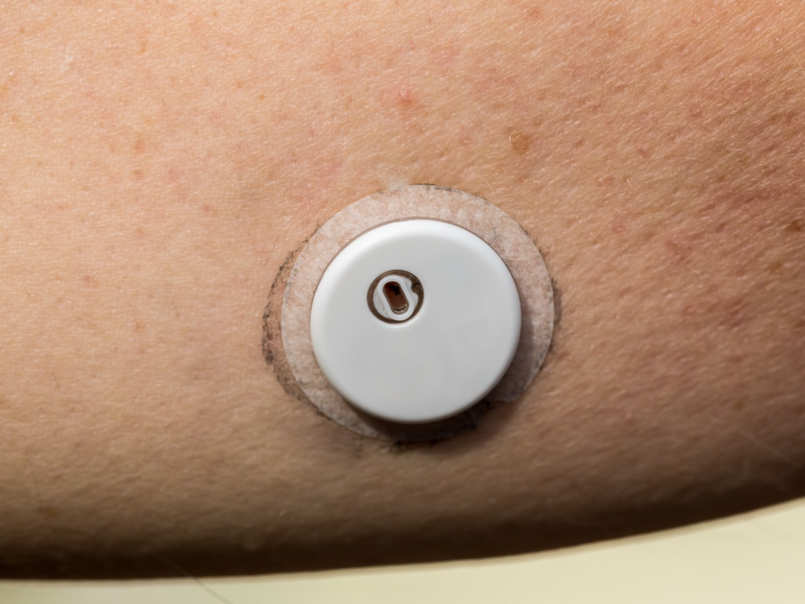

Executive Summary
The validation a glucose forecasting model receives just before it reaches the clinic is usually a single number computed over the whole patient population at once. The FairGlucose paper posted to arXiv on August 18 measured what that number conceals. Researchers at the Johns Hopkins Carey Business School and the diabetes management app company Welldoc built a 300-patient cohort with 25 patients in each of 12 strata crossing three age bands, gender, and type 1 versus type 2 diabetes, then asked 33 models from four families to predict glucose two hours ahead.
The aggregate metric for how well a model generalizes to patients it has never seen sat stably near 1.0. Computed separately for the 12 strata, the same value spread from 0.8 to 1.4. Forecast error for type 1 patients ran 6.3 mg/dL higher than for type 2, and the gap appeared in the same direction in all 33 models, from statistical baselines to frontier LLMs. The authors read that as a property of the task itself rather than a flaw in any one architecture.
Trace the gap to its source and the question narrows to which strata the hard cases pile up in. If no model swap closes it, one lever is left: which strata the data is gathered across, and what unit the results are reported in.
Key Numbers
The first number is the range a single aggregate metric hid; the other three say where that range came from.
Source: Luo et al., arXiv:2608.18296 (2026-08-18)
0.8 to 1.4
Generalization ratio across 12 strata
The same metric computed over the whole cohort looked stable near 1.0
6.3 mg/dL
Type 1 minus type 2 forecast error
A 95% bootstrap interval of 4.3 to 8.2 and a permutation p below 0.001 make chance an unlikely explanation
33 of 33
Models showing the same gap
Statistical, machine learning, neural time-series and frontier LLM families all erred more on type 1
63 vs 10 mg/dL
Error on hard versus easy cases
Subgroup gaps largely tracked how many hard cases landed in each stratum
The Aggregate Metric Showed No Problem
The data is not simulated. It comes from de-identified continuous glucose monitoring (CGM) records of people who were actually using a US-based mobile diabetes management platform. These are traces of self-management left behind in an app rather than a controlled trial, and the devices are mixed as well, with both Dexcom G6 and Abbott FreeStyle Libre in the cohort. From that pool the researchers crossed three age bands of 18 to 39, 40 to 64, and 65 and older with gender and with type 1 versus type 2 diabetes to form 12 strata, then placed 25 patients in each. That comes to 300 patients, 132,480 forecasting samples, and 3,945 meal, exercise, and medication events logged in the app by 81 of them.

The bar for admitting a sample was not loose. For a full day to be used, all 288 values in its 24 hours had to be present, and the 24 hours before and 8 hours after had to be continuous as well. If more than 40% of readings were constant, if a single value fell below 20 mg/dL, or if more than 20% exceeded 400 mg/dL, the entire day was discarded, and missing values were never imputed. Each surviving day yielded 24 pairs sampled an hour apart. One pair consists of a 24-hour input and an 8-hour output, and what the main text scores is the first 2 hours of that output. The researchers did not only match patient counts across strata; they ran every stratum through the same data quality gate.
The part of the validation design worth noting is how each stratum splits its patients in two. Twenty of the 25 take part in training and validation but keep some unused days in reserve, while the remaining five are held out of training entirely. Error measured on the first group is a score on new days from patients the model has trained on; error measured on the second is a score on patients the model has never seen. The ratio between the two is this paper's generalization metric. A value of 1.0 means the model works on an unseen patient about as well as it did in training, and 1.4 means it misses by 40% more on new patients.
The task is to take 24 hours of glucose history and predict the value two hours ahead. Running all 33 models on that task and comparing the two errors over the full cohort, every model's confidence intervals overlapped and the ratios clustered near 1.0. In a conventional external validation report the sentence would end there, with a conclusion that generalization is robust.
Split Into 12 Strata, It Spread 0.8 to 1.4
Run the same calculation separately in each of the 12 strata and the picture changes. Among type 2 men aged 65 and over the ratio was 0.90, meaning unseen patients were in fact slightly easier. Among type 2 women aged 40 to 64 it was 1.42. Those are the two widest values in the cohort, and averaging them lands back near 1.0.
The strata also part company on the absolute size of the error. Type 1 patients were off by 6.3 mg/dL more than type 2 patients, with a 95% bootstrap interval of 4.3 to 8.2 and a permutation p below 0.001. Looking only at the patients held out of training entirely, the gap remained at 5.6 mg/dL. Clarke Error Grid zone A, the clinical accuracy measure, split the same way, at 80.1% for type 2 against 72.2% for type 1 among the top five models. The clinical commonplace that the glucose variability and insulin dynamics of type 1 diabetes make prediction harder is stamped directly onto the numbers. Because the sliding windows overlap, confidence intervals computed per sample understate the true uncertainty. The authors therefore resampled patients with replacement, running 1,000 bootstrap draws and 10,000 permutations to produce these values.
That commonplace was already stamped onto the raw signal before any model ran. The coefficient of variation is 0.29 for type 1 and 0.23 for type 2, and time in range is 65.3% against 68.9%. The most variable of the 12 strata is type 1 men aged 18 to 39, at a mean glucose of 174.6 mg/dL and a coefficient of variation of 0.30. This table is the first thing the authors cite as grounds for disaggregated evaluation. The baseline against which model disparities would be measured was already present in the signal itself.
2.1One Axis at a Time, the Gender Difference Disappears
Gender is the trickier axis. Compare men and women wholesale at the patient level and the difference is 0.19 mg/dL with a p of 0.86, which reads as no gender problem at all. Split by diabetes type and the direction flips. Among type 1 patients, women erred more than men by 3.3 mg/dL in the 18 to 39 band and 2.1 mg/dL in the 40 to 64 band. Among type 2 patients the reverse held, with women 3.4 mg/dL and 2.4 mg/dL lower in the 40 to 64 and 65-plus bands. Two effects with opposite signs erased each other in the pooled average. Among type 1 patients aged 65 and over the male advantage has effectively vanished at 0.5 mg/dL, so even within one diabetes type the direction shifts again by age band. Standing the age axis up on its own gives the same result: the difference between the 18 to 39 and 65-plus groups is 1.85 mg/dL with a p of 0.16, which is not significant.
This is why the paper insists on intersectional analysis. A fairness check on gender alone and a fairness check on age alone both pass in this cohort. The gap is visible only when the axes are crossed, and because the sample was balanced by design, unequal subgroup sizes cannot be blamed for it. One more pairing deserves attention: the worst stratum on accuracy and the worst stratum on generalization are not the same stratum. The highest error among patients seen in training belongs to type 1 women aged 18 to 39 at 31.9 mg/dL, against 19.9 mg/dL for the best-served stratum. The worst generalizing stratum, meanwhile, is the type 2 women aged 40 to 64 seen earlier. No single metric catches both risk groups at once.
All 33 Models Missed in the Same Direction
The field splits into four families. Statistical methods such as ARIMA and AutoETS, boosting methods such as LightGBM and XGBoost, 20 neural time-series architectures including PatchTST and TFT (the zero-shot foundation model Chronos2 counts here), and a group of six that pairs frontier LLMs such as GPT-5.1, Claude 4.5 Sonnet, and Gemini 3 Flash with the time-series-specific foundation model TimeGPT. The scores themselves spread widely. The most accurate, NS-Transformer, came in at 25.62 mg/dL, and the least accurate, Chronos2, at 39.70 mg/dL.
The ranking between families is a familiar picture. Attention-based neural models took the top places, while the boosting model LightGBM landed within 0.2 mg/dL of PatchTST (25.96 against 25.75) and actually led it on clinical accuracy (Clarke A of 76.8% against 76.0%). The statistical baseline ARIMA, at 27.44 mg/dL, beat several frontier LLMs. Clarke A ranged from Chronos2's 54.2% to LightGBM's 76.8%, the best of the 33, and the 23 to 24% that missed zone A fell mostly in zone B, where no treatment change is required. The table below takes one model from each of the four families and lays that ranking out.
Set the type 1 column beside the type 2 column, though, and the same inequality repeats regardless of rank.
| Family | Model | All | Type 1 | Type 2 |
|---|---|---|---|---|
| Neural | NS-Transformer | 25.62 | 28.46 | 22.79 |
| Machine learning | LightGBM | 25.96 | 29.07 | 22.84 |
| Neural | PatchTST | 25.75 | 28.68 | 22.83 |
| Statistical | ARIMA | 27.44 | 30.78 | 24.10 |
| LLM | GPT-5.1 | 27.57 | 30.62 | 24.52 |
| LLM | Claude 4.5 Sonnet | 28.20 | 30.87 | 25.53 |
| Neural (zero-shot) | Chronos2 | 39.70 | 44.21 | 35.18 |
▲ Two-hour forecast error (rMSE, mg/dL) for seven models drawn from Table 3 of the paper, one per family. In all 33 models the type 1 column ran higher than the type 2 column
Change the architecture, change the entire family, even switch to an LLM that predicts from a prompt with no training at all, and the inequality does not flip. That repetition is the authors' basis for reading the gap as a property of the task rather than a defect in any individual model. Nor is it a gap that better modeling closes.
3.1Low Cross-Subgroup Disparity Does Not Make a Model Fair
Here the authors stand up one more axis. They put mean error on the horizontal and the standard deviation of error across the 12 strata on the vertical, separating accuracy from evenness across subgroups. On that plane the frontier LLMs sit in a strange spot. Claude 4.5 Sonnet's cross-subgroup disparity of 5.34 was the lowest of the 15 models compared and Gemini 3 Flash's 5.73 was third lowest, yet their mean errors of 28.2 mg/dL and 31.3 mg/dL run 3 to 6 mg/dL above the leading neural models.
The authors are blunt about not reading that position as praise. "Low disparity here reflects uniformly mediocre zero-shot prediction rather than equitable competence, so it is not evidence of deployment readiness; it does show that error magnitude and error equity are separable properties that a single leaderboard column would hide," they write. The corner where both axes are good was not empty either. PatchTST and TFT secured accuracy and cross-subgroup evenness together, while the statistical baselines ARIMA and Naive ranked 13th and 14th of 15 on disparity, placing them among the least even performers.
The Gap Was the Share of Hard Cases
Tracing where the subgroup gap comes from leads somewhere unexpected. The authors sorted every forecasting sample into hard and easy cases by majority vote across models. A sample that most models miss badly is a hard case. Sorted that way, the average error within a difficulty level turned out to be fairly stable from stratum to stratum: hard cases cluster around 63 mg/dL and easy cases around 10 mg/dL.
What changed was the mix of the two. Hard cases concentrate in the type 1 strata. Young type 1 men and middle-aged type 1 women carried the highest share, while type 2 men aged 65 and over carried the highest share of easy cases. Subgroup performance gaps, the authors conclude, largely reflect this difference in composition. What a hard case is matters too. They are periods of rapid glucose excursion, post-meal spikes, and exercise-induced drops, exactly the moments when a forecast is most worth having.
Split the leading models' improvement by difficulty, then, and the direction goes astray. Against the Naive baseline, the error ratio for top neural models fell to between 0.77 and 0.89 on easy cases but stayed between 0.89 and 0.92 on hard ones. The best hard-case ratio was PatchTST's 0.89, the best easy-case ratio TimeXer's 0.77. Most of what improves the average came from the easy stretch, and improvement in the clinically important stretch was far smaller. One more comparison puts the size in perspective. The statistical baselines ARIMA and AutoETS hold ratios near 1.0 at both difficulty levels. On hard cases alone, then, the modern neural models beat the classical baseline by only about 10%.
4.1Meals and Exercise, Handed Over in Full, Bought 0.1 mg/dL
If hard cases arise from meals and exercise, feeding that information to the model ought to help. The authors tested the intuition under the most favorable conditions available. They supplied the meal, exercise, and medication events logged in the app, including events that happened after the prediction time. That amounts to handing over information no deployed system could know, so it stands as an upper bound on the possible gain.
The upper bound came to roughly 0.1 mg/dL. PatchTST improved by 0.11 mg/dL and TFT by 0.08 mg/dL. In the 65-plus stratum PatchTST actually got worse, by 0.16 mg/dL. This holds even though events were carried by 16.8% of all samples, a far from trivial share, of which 72.8% were medication, 15.9% diet, and 11.3% exercise. Logging density itself differs by stratum, with patients aged 65 and over logging 22% fewer events than younger groups and type 2 patients logging 12% more than type 1, but that difference did not translate into forecast error.
A clue to why events carry so little weight sits in their timing. Counted at the window level, only 33.8% of event occurrences fall inside the 24-hour input window, and just 3.0% fall inside the 2-hour forecast window that is actually scored. The remaining 63.2% happen between 2 and 24 hours after the prediction time. Generous as the oracle condition looks, events that overlap the scored window are rare. Even so, 31 of the 32 comparisons crossing four models with eight subgroups showed the event-fed model equal or better. The direction is consistent, but the magnitude does not come close to the roughly 5 mg/dL threshold of clinical significance. The visible gains went to the weaker models instead. Autoformer improved by 0.77 mg/dL. The authors read this as the leading models already picking up traces of those events in the 24-hour glucose curve without being told.
Input length is where subgroup differences showed up clearly. Patients aged 18 to 39, especially those with type 1, scored about as well on a short slice of recent history as on the full 24 hours. Patients aged 65 and over, especially those with type 2, degraded sharply as the input shrank. Fix one input window length for every patient and some strata waste data while others lose performance. Models split as well. Neural architectures such as PatchTST, TFT, and N-HiTS gained the most from longer inputs, while linear models and foundation models barely moved. Against earlier reports that extended CGM input yields little, the authors counter that the size of the benefit depends on the architecture.
Fix the Reporting Unit, Not the Model
The paper's recommendation is not an architecture. It is that disaggregated reporting become the default: "We recommend that subgroup-disaggregated reporting become a default standard for digital health AI evaluation, analogous to how clinical trials report outcomes by demographic subgroup." The authors add difficulty-stratified reporting alongside it. If running through all 33 models leaves the gap untouched, the remaining handles are cohort composition and the unit of reporting.
Comparison with existing CGM benchmarks makes clear what this cohort did differently. GlucoBench pooled five public datasets to reach roughly 461 subjects but did not enforce demographic balance, and OhioT1DM offers only 12 type 1 patients. GluFormer, a foundation model trained on 10 million CGM measurements, performed no subgroup evaluation. Without balance built into the design up front, there are no samples to split by stratum later even when you want to.
The authors record their own limits as well. Events are restricted to what was logged in the app, so passively sensed data such as sleep and stress is missing, and because the data comes from a single US platform, generalization to other regions, populations, and CGM devices has to be validated separately. The 12 strata cross only age, gender, and diabetes type, leaving out axes such as race, socioeconomic status, and comorbidities. There is also a risk of overfitting to one dataset, so they encourage validation on others in parallel. Cohort metadata, splits, code, and the reference leaderboard are to be released on GitHub, while the raw CGM data can only be requested under a data use agreement with Welldoc.
Editor's Note: This overlaps with a scene Pebblous meets often in data quality work. Word that validation is finished usually arrives as a single number. The unit that number was aggregated over rarely arrives with it. What this paper shows is that changing the unit of aggregation alone surfaces a gap that was not visible in the same data. Thirty-three model swaps did not reveal it; one change of reporting unit did. Which strata you will report by is something to settle before the data is collected, which is also why this cohort placed 25 patients in every stratum in advance.
The paper is available at arXiv:2608.18296.
References
- 1.Luo, J., Zhi, X., Han, R., Kumbara, A., Iyer, A. K., Shomali, M. E., Agarwal, R., & Gao, G. G. (2026). "FairGlucose: A CGM Fairness Benchmark Reveals Subgroup Disparities Hidden in Population-Level Validation." arXiv:2608.18296.
- 2.Sergazinov, R., Chun, E., Rogovchenko, V., Fernandes, N., Kasman, N., & Gaynanova, I. (2024). "GlucoBench: Curated List of Continuous Glucose Monitoring Datasets with Prediction Benchmarks." arXiv:2410.05780.
- 3.Marling, C., & Bunescu, R. (2020). "The OhioT1DM Dataset for Blood Glucose Level Prediction: Update 2020." CEUR Workshop Proceedings, Vol. 2675, p. 71.
- 4.GluFormer Team. (2025). "A Generative Foundation Model for Continuous Glucose Monitoring." Nature.